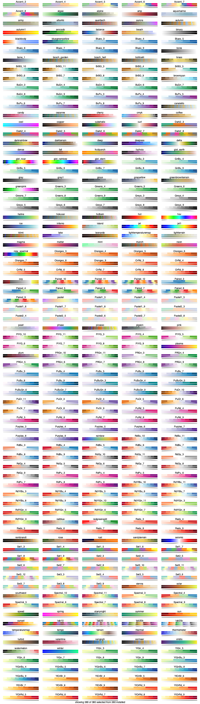
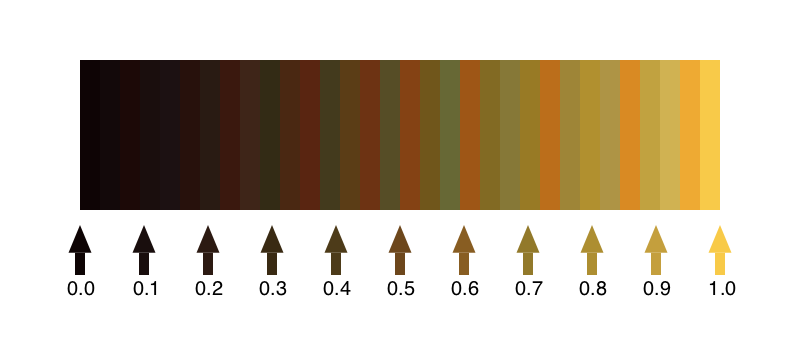
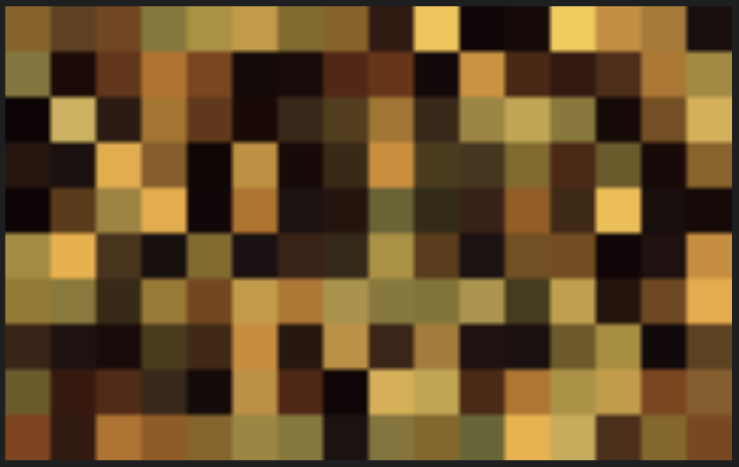

Basics
ColorScheme objects
When you start using ColorSchemes.jl, it loads a set of pre-defined ColorSchemes, and stores them in a dictionary, exported and called colorschemes.
A ColorScheme is a Julia object which contains:
- an array of colors
- a string defining a category
- a string that can contain descriptive notes
To access one of these built-in colorschemes, use its symbol:
julia> ColorSchemes.leonardoIf you're using Juno, the colors in the colorscheme should appear in the Plot window.
Otherwise, you'll see the colors listed as RGB values:
32-element Array{RGB{Float64},1}:
RGB{Float64}(0.0548203,0.016509,0.0193152)
RGB{Float64}(0.0750816,0.0341102,0.0397083)
RGB{Float64}(0.10885,0.0336675,0.0261204)
RGB{Float64}(0.100251,0.0534243,0.0497594)
...
RGB{Float64}(0.620187,0.522792,0.216707)
RGB{Float64}(0.692905,0.56631,0.185515)
RGB{Float64}(0.681411,0.58149,0.270391)
RGB{Float64}(0.85004,0.540122,0.136212)
RGB{Float64}(0.757552,0.633425,0.251451)
RGB{Float64}(0.816472,0.697015,0.322421)
RGB{Float64}(0.933027,0.665164,0.198652)
RGB{Float64}(0.972441,0.790701,0.285136)You can access the colors as:
ColorSchemes.leonardo.colorsBy default, the names of the colorschemes aren't imported (there are rather a lot of them). But to avoid using the prefixes, you can import the ones that you want:
julia> import ColorSchemes.leonardo
julia> leonardo
32-element Array{RGB{Float64},1}:
RGB{Float64}(0.0548203,0.016509,0.0193152)
RGB{Float64}(0.0750816,0.0341102,0.0397083)
RGB{Float64}(0.10885,0.0336675,0.0261204)
RGB{Float64}(0.100251,0.0534243,0.0497594)
...
RGB{Float64}(0.757552,0.633425,0.251451)
RGB{Float64}(0.816472,0.697015,0.322421)
RGB{Float64}(0.933027,0.665164,0.198652)
RGB{Float64}(0.972441,0.790701,0.285136)You can reference a single value of a scheme once it's loaded:
leonardo[3]
-> RGB{Float64}(0.10884977211887092,0.033667530751245296,0.026120424375656533)Or you can 'sample' the scheme at any point between 0 and 1 using get():
get(leonardo, 0.5)
-> RGB{Float64}(0.42637271063618504,0.28028983973265065,0.11258024276603132)Base.get — Function.get(cscheme::ColorScheme, x, rangescale)Returns a single color from the colorscheme.
get(cscheme::ColorScheme, inData :: Array{Number, 2}, rangescale=:clamp)
get(cscheme::ColorScheme, inData :: Array{Number, 2}, rangescale=(minVal, maxVal))Return an RGB array of colors generated by applying the colorscheme to the 2D input data.
If rangescale is :clamp the colorscheme is applied to values between 0.0-1.0, and values outside this range get clamped to the ends of the colorscheme.
Else, if rangescale is :extrema, the colorscheme is applied to the range minimum(indata)..maximum(indata).
Examples
img = get(colorschemes[:leonardo], rand(10,10)) # displays in Juno Plots window, but
save("testoutput.png", img) # you'll need FileIO or similar to do this
img2 = get(colorschemes[:leonardo], 10.0*rand(10,10), :extrema)
img3 = get(colorschemes[:leonardo], 10.0*rand(10,10), (1.0, 9.0))
# Also works with PerceptualColourMaps
using PerceptualColourMaps # warning, installs PyPlot, PyCall, LaTeXStrings
img4 = get(PerceptualColourMaps.cmap("R1"), rand(10,10))The colorschemes dictionary
The ColorSchemes module automatically provides a number of predefined schemes. All the colorschemes are stored in a dictionary, called colorschemes, which is exported.
Chart of all schemes
The pre-defined schemes shown in the following illustration. Each scheme is drawn in three ways: first, showing each color; next, a continuous blend obtained using get() with values ranging from 0 to 1 (stepping through the range 0:0.001:1); and finally a luminance graph shows how the luminance of the scheme varies as the colors change.
It's generally agreed (search the web for "Rainbow colormaps considered harmful") that you should choose colormaps with smooth linear luminance gradients.

(You can generate this image using ColorSchemes/docs/src/assets/figures/draw-swatches.jl, after obtaining the Luxor package to draw and label things.)
ColorSchemes.colorschemes — Constant.colorschemesA dictionary of pre-defined colorschemes.
Finding colorschemes
Use the findcolorscheme() function to look through the pre-defined colorschemes. The string you provide can occur in the colorscheme's name, in the category, or in the notes.
julia> findcolorscheme("magenta")
colorschemes containing "magenta"
spring (notes) sampled color schemes, linearl...
cool (notes) sampled color schemes, linearl...
hsv (notes) sampled color schemes, red-yel...
found 3 results for "magenta"julia-1.1> findcolorscheme("cmocean")
colorschemes containing "cmocean"
oxy (category) cmocean
matter (category) cmocean
dense (category) cmocean
balance (category) cmocean
thermal (category) cmocean
tempo (category) cmocean
gray (category) cmocean
speed (category) cmocean
turbid (category) cmocean
solar (category) cmocean
ice (category) cmocean
haline (category) cmocean
algae (category) cmocean
amp (category) cmocean
deep (category) cmocean
delta (category) cmocean
curl (category) cmocean
phase (category) cmocean
found 18 results for "cmocean"ColorSchemes.findcolorscheme — Function.findcolorscheme(str)Find all color schemes matching str. It can be a regular expression.
To read the notes of built-in colorscheme cscheme:
colorschemes[:cscheme].notesIf you prefer, you can always 'roll your own' search.
[k for (k, v) in colorschemes if occursin(r"colorbrew"i, v.category)]
265-element Array{Symbol,1}:
:BuPu_6
:Spectral_4
:RdYlGn_5
⋮
:BrBG_8
:Oranges_4Make your own
Of course you can easily make your own ColorScheme objects by building an array:
grays = ColorScheme([RGB{Float64}(i, i, i) for i in 0:0.1:1.0])Give it a category or some added notes if you want:
grays = ColorScheme([RGB{Float64}(i, i, i) for i in 0:0.1:1.0],
"my useful schemes", "just some dull grey shades")although this won't end up in the colorschemes dictionary.
Another way is to use loadcolorscheme() function:
loadcolorscheme(:mygrays, [RGB{Float64}(i, i, i) for i in 0:0.1:1.0],
"useful schemes", "just some dull grey shades")and that will be added (temporarily).
julia-1.1> findcolorscheme("dull")
colorschemes containing "dull"
mygrays (notes) just some dull grey shades...
found 1 result for "dull"Continuous color sampling
You can access the specific colors of a colorscheme by indexing (eg leonardo[2] or leonardo[2:20]). Or you can sample a colorscheme at a point between 0.0 and 1.0 as if it were a continuous range of colors:
get(leonardo, 0.5)returns
RGB{Float64}(0.42637271063618504,0.28028983973265065,0.11258024276603132)
The colors in the predefined colorschemes are usually sorted by LUV luminance, so this often makes sense.
You can use get() with data in arrays, to return arrays of colors:
julia> get(leonardo, [0.0, 0.5, 1.0])
3-element Array{RGB{Float64},1} with eltype ColorTypes.RGB{Float64}:
RGB{Float64}(0.05482025926320272,0.016508952654741622,0.019315160361063788)
RGB{Float64}(0.42637271063618504,0.28028983973265065,0.11258024276603132)
RGB{Float64}(0.9724409077178674,0.7907008712807734,0.2851364857083522)
julia> simg = get(leonardo, rand(10, 16));
julia> using FileIO
julia> save("mosaic.png", simg)